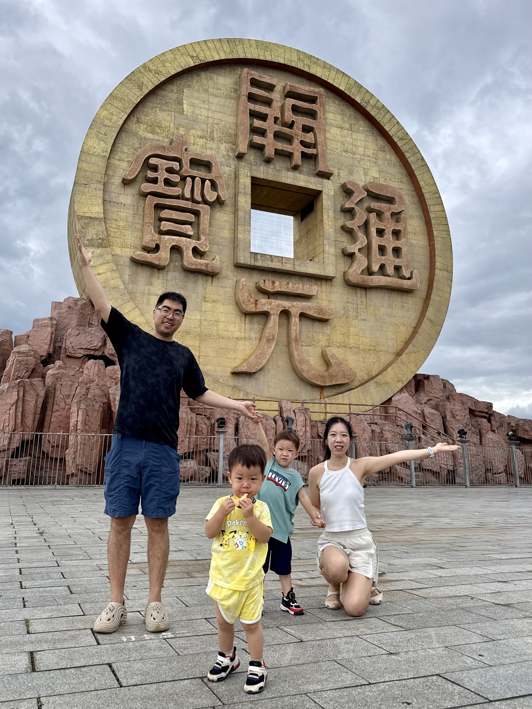

Latest Month

Family Memory Site
从相遇到一家人
这里记录我们从认识、相爱、结婚，到陪孩子一起长大的日子。照片、时间线、旅行、日历和家庭资料，都放在一个长期保存的地方。
Upcoming
近期活动提醒
Family Timeline
家庭时间线
从两个人的相遇开始，到成为一家人的每个重要节点。这里是整个网站的主线索引。
Monthly Five
家庭时间轴相册
每个月精选 5 张照片，不追求数量，只留下最能代表这个月的家庭瞬间。
Travel Map
旅行地图
从世界地图开始浏览，城市是最小标记单位。不同颜色记录去过的地方。
世界地图
按国家查看，每次旅行最多显示 10 张照片。
中国地图
按城市查看，每次旅行最多显示 10 张照片。
Family Archive
家庭资料库
这里不直接展示敏感原件，而是记录资料类型、存放位置、有效期和提醒状态。